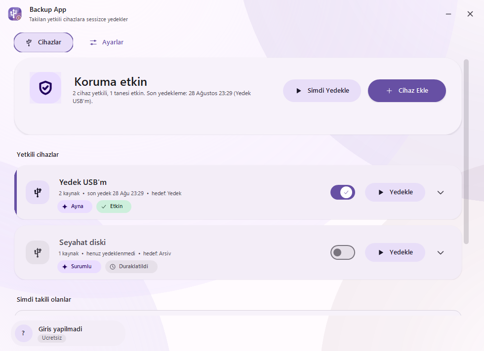
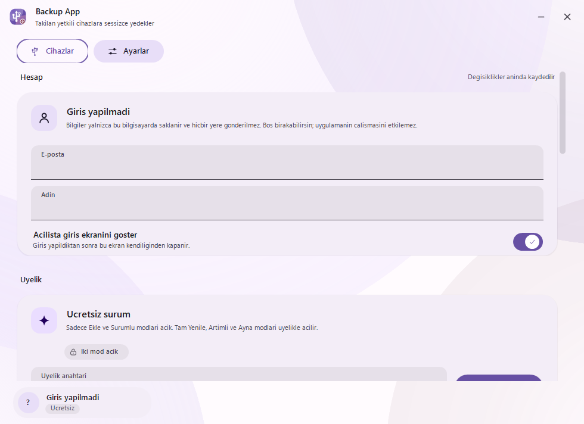
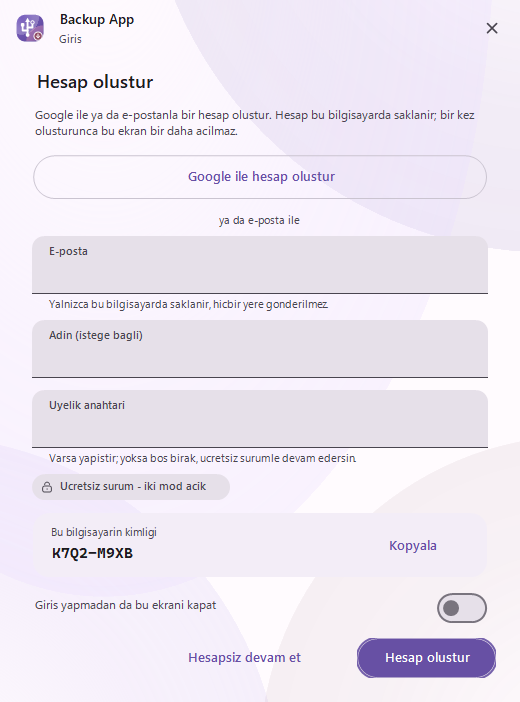
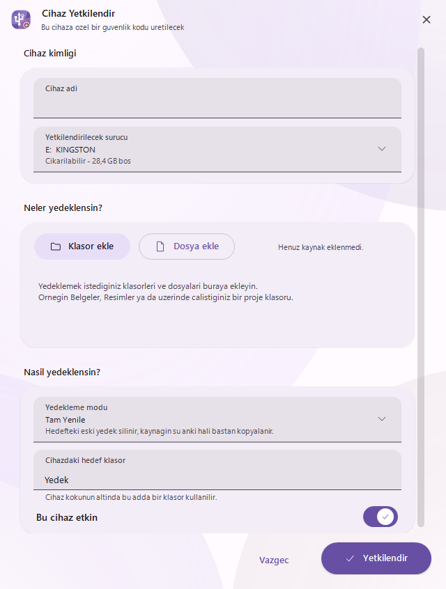
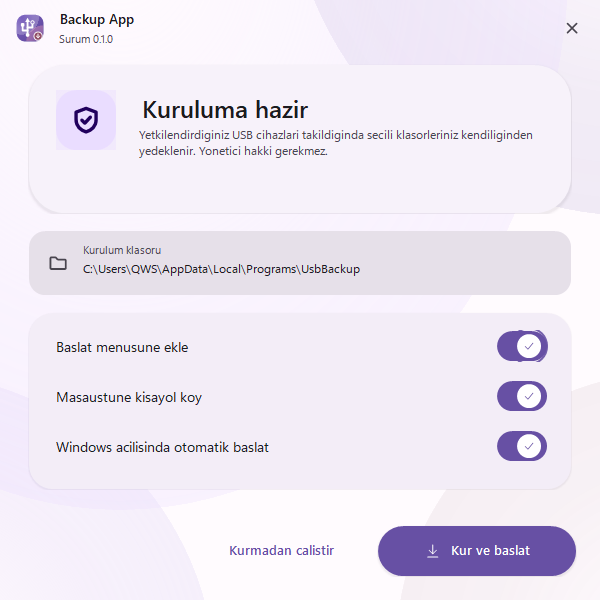

Yetkilendirdiğin belleği taktığın anda, seçtiğin klasörler sessizce kopyalanır. Tıklamak yok, hatırlamak yok. Tanımadığı hiçbir cihaza dokunmaz.
Tek dosya · Kurulum sihirbazı içinde · Yönetici hakkı gerekmez

Uygulama sistem tepsisinde bekler. Bir sürücü takıldığında Windows onu haber verir — uygulama sürekli tarama yapmaz, bu yüzden boştayken hiçbir şey harcamaz.
USB'yi tak, Cihaz Ekle de. Uygulama o cihaza özel 9 haneli bir güvenlik kodu üretir ve köküne gizli bir anahtar dosyası yazar.
Klasör ve dosyaları ekle, yedekleme modunu seç. Her mod ne yaptığını tek satırda anlatır; belgeye bakman gerekmez.
O cihaz her takıldığında anahtar kontrol edilir, eşleşirse yedekleme kendiliğinden başlar. Yabancı cihazlara dokunulmaz.
Her cihazın kendine ait gizli bir anahtarı vardır. Anahtar eşleşmeyen hiçbir belleğe tek bir dosya bile yazılmaz.
Sürekli tarama yok. Windows'un cihaz takma olayını dinler; beklerken işlemci kullanımı sıfırdır.
Tam Yenile, Artımlı, Ayna, Sürümlü, Sadece Ekle. Her cihaz için ayrı seçilir — biri arşiv, biri hızlı senkron olabilir.
Cihazı takmayı unuttuysan haber verir: “5 gündür yedeklenmedi.” Aralığı sen seçersin — 24 saatten bir aya kadar, ya da hiç.
İkisi de aynı renk kimliğinden türer. Ayarlardan değişir, anında kaydedilir — bu sitenin sağ üstündeki düğme gibi.
İndirdiğin .exe hem kurulum hem uygulamadır. Kullanıcı klasörüne kurulur;
yönetici hakkı istemez. Kurmadan da çalıştırabilirsin.
Tek ekrandan her şey: başlangıç kaydı, zamanlanmış görev, kısayollar, ayarlar ve istersen cihaz anahtarları. Neyin silineceğini önce gösterir.
Hangi modu seçersen seç, silme işlemi yalnızca cihazdaki kendi yedek klasöründe olur. Kaynak klasörlerin ve cihazın geri kalanı asla değiştirilmez.
| Mod | Ne yapar | Plan |
|---|---|---|
| Tam Yenile | Hedefteki eski yedek silinir, kaynağın o anki hali baştan kopyalanır. | Üyelik |
| Artımlı | Yalnızca yeni ve değişen dosyalar eklenir; hiçbir şey silinmez. | Üyelik |
| Ayna | Hedef kaynakla birebir olur: kaynakta silinen hedeften de silinir, değişmeyen tekrar kopyalanmaz. | Üyelik |
| Sürümlü | Her yedek tarihli ayrı bir klasöre kopyalanır; geçmiş korunur. | Ücretsiz |
| Sadece Ekle | Yalnızca yeni dosyalar eklenir; var olanlara dokunulmaz. Varsayılan. | Ücretsiz |
Ücretsiz sürüm kırpılmış bir sürüm değil: otomatik algılama, cihaz yetkilendirme, hatırlatıcı, tema, sınırsız cihaz ve sınırsız dosya — hepsi açık. Öncelikli üyelik yalnızca üç ileri yedekleme modunu ekler.
Arayüzde hazır Windows denetimi kullanılmaz — butonlar, kartlar, anahtarlar, menüler, hepsi uygulamanın kendi tasarım sistemiyle çizilir. Sağ üstteki düğmeyle temayı değiştir, aşağıdaki ekranlar da onu takip etsin.




Hayır. Uygulama kendi kullanıcı klasörüne (%LocalAppData%\Programs\UsbBackup)
kurulur. Hiçbir sistem ayarı değiştirilmez.
Hayır. Uygulama hiçbir yere veri göndermez, güncelleme sunucusuna bağlanmaz. Dosyaların bilgisayarınla cihazın arasında kalır.
Hayır. Dosyalar cihaza olduğu gibi, klasör yapısı korunarak kopyalanır. Uygulama olmadan da açabilir, kopyalayabilir, taşıyabilirsin. Bir yedeğin en önemli özelliği, onu okumak için o programa muhtaç olmamandır.
Silme işlemi yalnızca cihazdaki kendi yedek klasöründe olur. Bilgisayardaki kaynak
klasörlere ve cihazın geri kalanına hiç dokunulmaz. Hedef klasör yolu iki ayrı yerde
doğrulanır: kullanıcı mutlak bir yol ya da ..\.. yazsa bile cihaz kökünün
altındaki bir alt klasöre indirgenir.
Hiçbir şey. Uygulama yalnızca kendi yazdığı gizli anahtar dosyasını taşıyan ve bilgisayarda kayıtlı profille eşleşen cihazlara yedek alır. Diğerleri günlüğe not düşülüp yok sayılır.
İstersen. Üç çalışma şeklinden birini seçersin: tepside beklesin, yalnızca cihaz takılınca açılsın (arka planda hiçbir şey çalışmaz), ya da sadece elle açayım.
Ayarlar → Tehlikeli bölge → “Kaldırmayı başlat”, ya da Windows'un Uygulamalar listesi. Neyin silineceği önce listelenir; cihazdaki yedeklerin silinmesi ayrı bir seçenektir ve varsayılan olarak kapalıdır.
Uygulama hatırlatır. Ayarlar → Hatırlatıcı'dan bir aralık seçersin — 24 saat, 48 saat, 72 saat, 1 hafta, 2 hafta ya da 1 ay. Seçtiğin süre boyunca bir cihaz yedeklenmediyse kısa bir bildirim gelir ve ana ekranda uyarı görünür. İstemezsen “Kapalı” seçebilirsin.
Üç yedekleme modu: Tam Yenile, Artımlı ve Ayna. Bunların dışında hiçbir şey kısıtlı değil — cihaz sayısı, dosya sayısı, otomatik algılama, hatırlatıcı, tema, hepsi ücretsiz sürümde açıktır. Üyelik anahtarı çevrimdışı doğrulanır; uygulama bunun için de internete bağlanmaz.
Üç adım:
ABCD-EFGH gibi kısa bir kod.
“Kimliği kopyala” düğmesiyle alabilirsin.Doğrulama tamamen çevrimdışıdır: anahtar girildikten sonra internet bağlantısı gerekmez. Satın alma sayfası henüz hazırlanıyor — bu adım açıldığında anahtar ödemenin ardından kendiliğinden gönderilecek.
Hayır. Uygulamanın içinde hiçbir ağ kodu yoktur: ne kullanım verisi, ne dosya adı, ne de üyelik bilgisi gönderilir. Üyelik anahtarı bile çevrimdışı doğrulanır. Bunu istersen bir güvenlik duvarıyla kendin de sınayabilirsin — uygulama bağlantı kurmaz.
Hayır, uygulamanın kaynak kodu kapalıdır. C# ve .NET 8 ile yazılmıştır ve tek dosya hâlinde dağıtılır. Bir sorun bulursan GitHub üzerinden bildirebilirsin.
Windows 10 ve 11 · 64 bit · Tek dosya · Ücretsiz sürüm